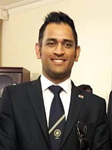

WIKIPEDIA
WIKIPEDIA
The Free Encyclopedia
Personal life
International records
Awards
MS DHONI

- Mahendra Singh Dhoni (/məˈheɪndrə ˈsɪŋ dhæˈnɪ/ (listen); born 7 July 1981) is a former Indian cricketer. He was captain of the Indian national team in limited-overs formats from 2007 to 2017 and in Test cricket from 2008 to 2014. He plays as a right-handed wicket-keeper-batsman and is also the current captain of Chennai Super Kings in the Indian Premier League.
Born in Ranchi, Bihar (now in Jharkhand),[2][3] His exceptional wicketkeeping skills allowed him to become the regular wicketkeeper at the Commando Cricket Club (1995–1998), he was picked for the 1997/98 season Vinoo Mankad Trophy Under-16 Championship, where he performed well.[4] From 2001 to 2003, He worked as a Travelling Ticket Examiner at Kharagpur railway station under South Eastern Railway in Midnapore, in West Bengal.[5][6] In Indian domestic cricket he played for Bihar and then for Jharkhand Cricket team. Dhoni's performance in the 2002–03 season included three half-centuries in the Ranji Trophy and a couple of half-centuries in the Deodhar Trophy, as he started gaining recognition for his lower-order contribution as well as hard-hitting batting style.
Personal life
His ancestral village is Lwali, which is in Jaiti taluka of Almora district of the Uttarakhand state. The village has population of 20 to 30 families. His father Pan Singh Dhoni left the village in 1970 for employment. He eventually settled in Ranchi. Dhoni's uncle Dhanpat Singh Dhauni and his cousin Hayat Singh Dhauni still live in Lwali.[165][166]
He married Sakshi Singh Rawat on 4 July 2010.[167][168]
The wedding took place in Dehradun, one day after the couple got engaged.[169][170] Dhoni and his wife have one daughter, Zeeva Dhoni.[171][172]
Dhoni is an enthusiast of the Indian Army. While spending a day with the parachute regiment in Ranchi, Dhoni said, "Since childhood I wanted to join the Army. Seeing the soldiers, I thought one day I'll be the same".[173]
He holds the post of vice-president marketing in India Cements Ltd. The company is headed by former BCCI president and IPL franchise Chennai Super Kings owner N. Srinivasan.[134][174][175][176]
International records
Test Cricket Record
- Dhoni is the first Indian wicket-keeper to score 4,000 Test runs.
- After hitting a six in the third Test against England in Southampton, Dhoni completed 50 sixes as a captain, an Indian record.
ODI Cricet Records
- Dhoni is the third captain (and the first non-Australian) overall to win 100 games.
- Most not outs (84) in ODIs.
Awards
- 2018: Padma Bhushan, India's third-highest civilian award
- 2009: Padma Shri, India's fourth-highest civilian award
- 2007–08: Major Dhyanchand Khel Ratna award, India's highest honor given for achievement in sports
Scroll to top